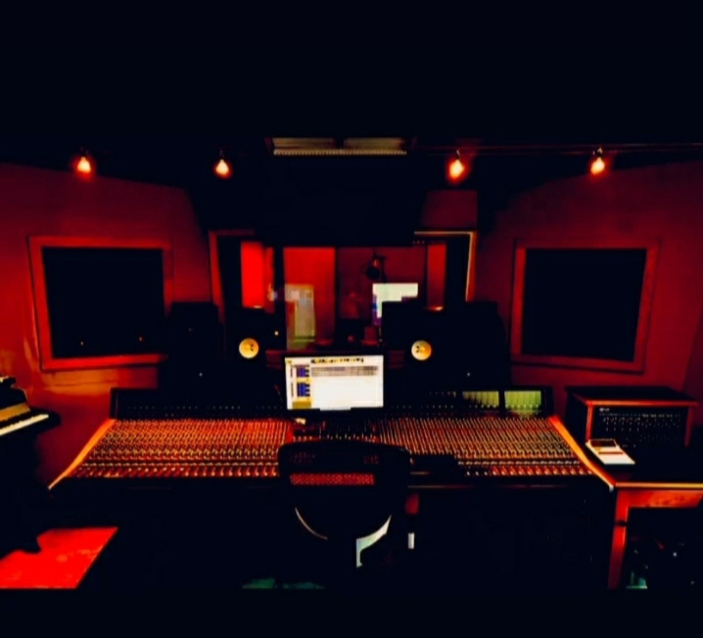
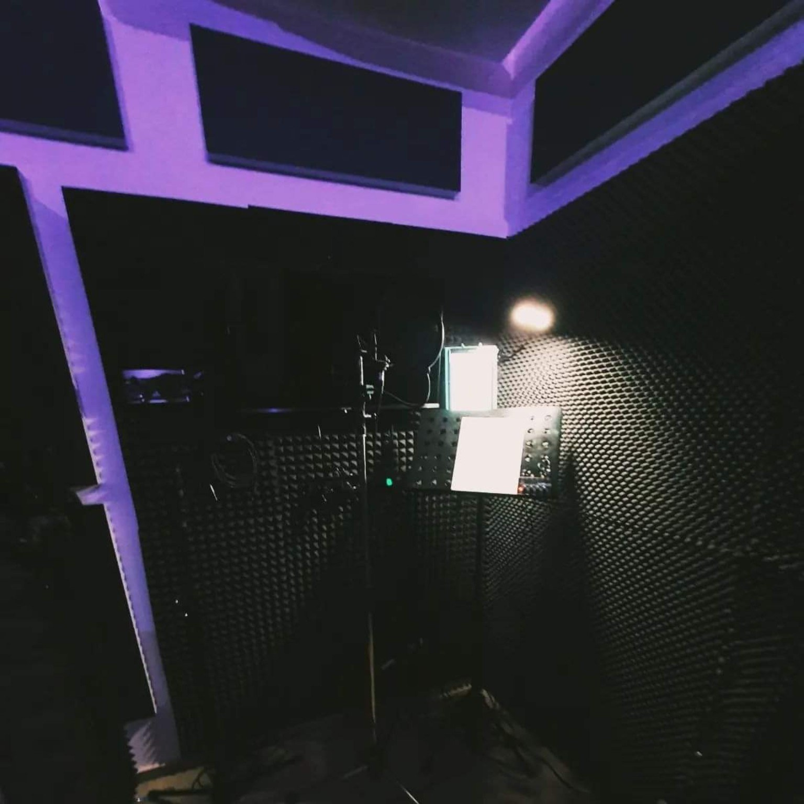
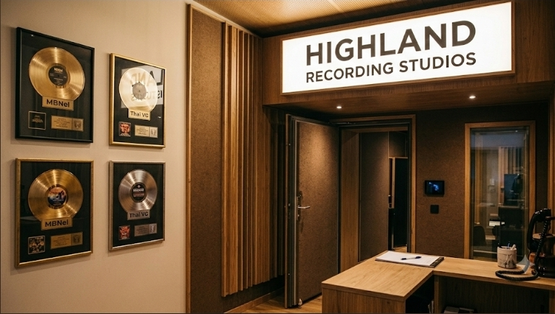
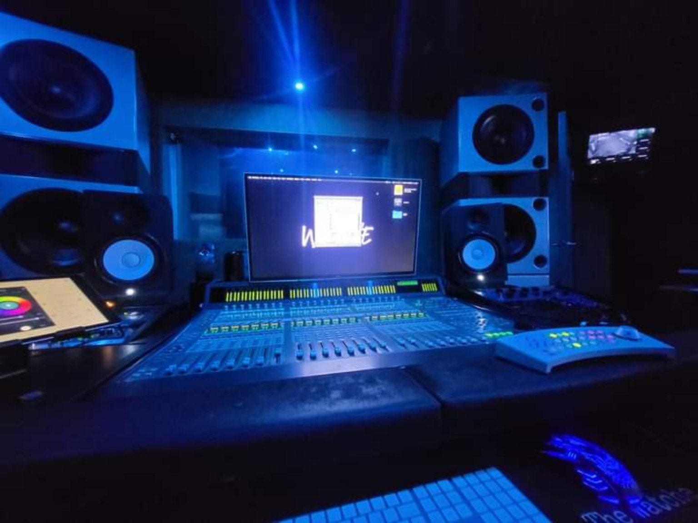
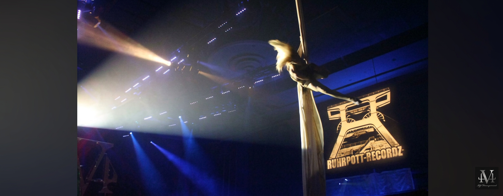
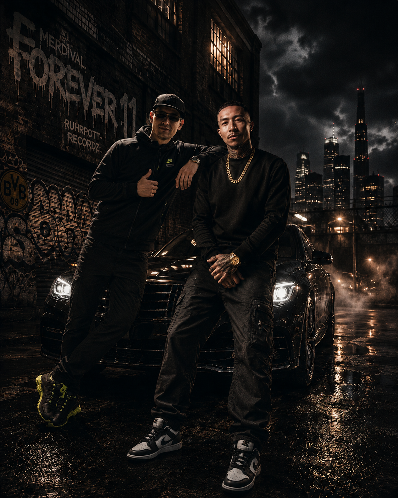
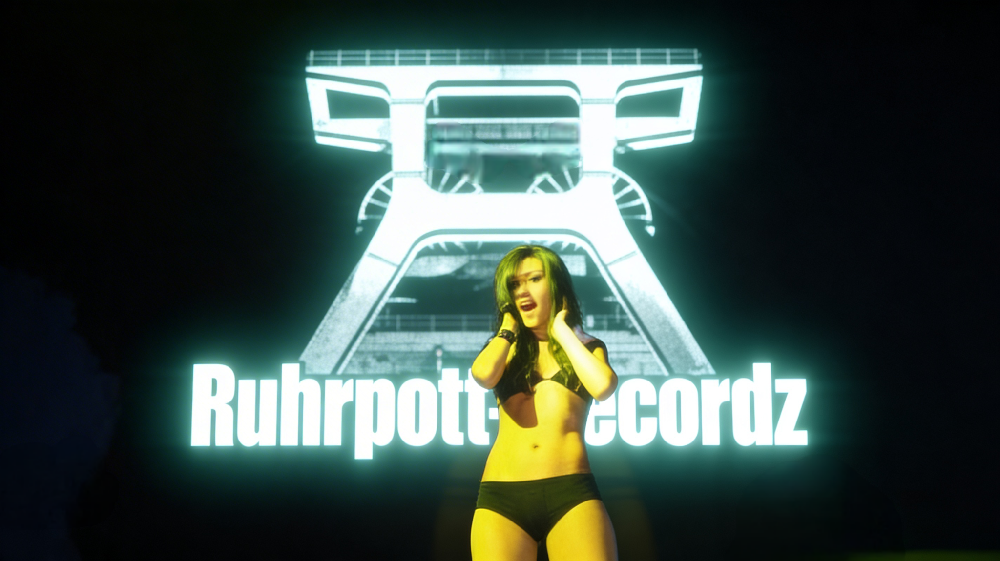
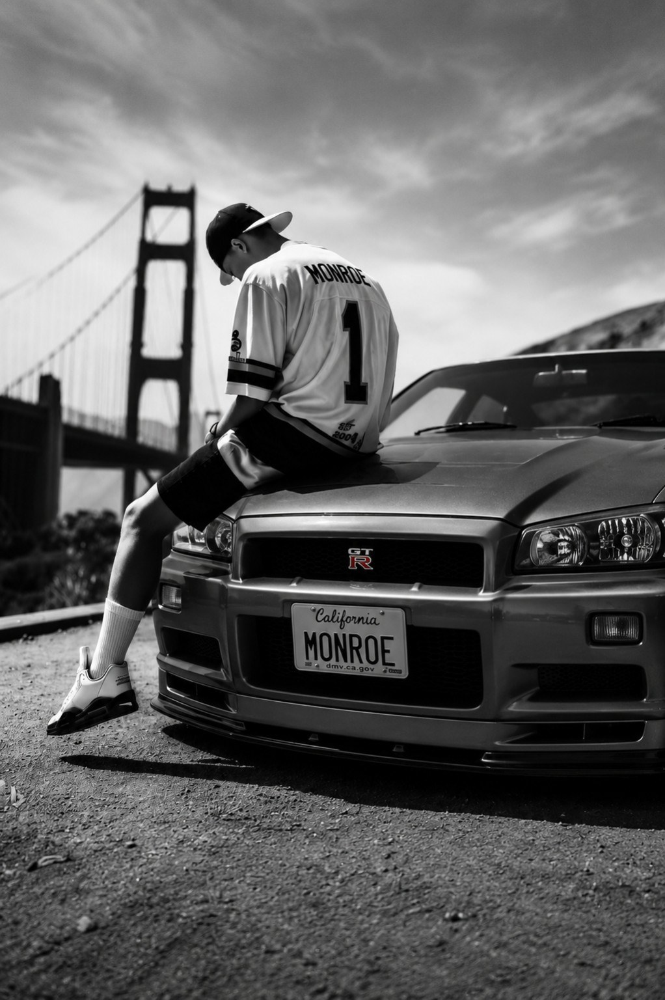

Ruhrpott Recordz · Official Video
Einblicke in Sound, Künstler und die visuelle Welt des Labels.
Ruhrpott Recordz ist ein unabhängiges Label und Produktionsprojekt mit Wurzeln im Ruhrgebiet und Verbindungen in die USA. Von Beats und Recording bis zu Mixing, Mastering und Visuals – regional verwurzelt, international ausgerichtet.
Ruhrpott Recordz verbindet die industrielle Identität des Ruhrgebiets mit West-Coast-Einflüssen. Musik, Produktion und Bildsprache gehören zusammen – vom ersten Beat bis zum fertigen Release.
Musikvideos und visuelle Projekte von Ruhrpott Recordz – direkt hier ansehen.
Die Arbeit hinter der Musik: Beats, Recording, Mixing und Mastering sowie die kreative Umsetzung von Projekten. Ruhrpott Recordz denkt Sound und Visuals gemeinsam.
Das große Motiv zeigt bewusst das Artist-Visual mit dem Mann und den Frauen; das Regieraumfoto ist in die Bildwelt und den Seitenhintergrund integriert.





Aus dem Ruhrgebiet – mit Blick auf die USA und darüber hinaus. Unabhängige Musikproduktion, kreative Zusammenarbeit und eine eigene visuelle Handschrift.
Kontakt aufnehmen ↗Eine Übersicht über Songs, Alben und Projekte aus der internationalen Zusammenarbeit rund um Ruhrpott Recordz.
Je nach Projekt umfasst die Mitwirkung unter anderem Beats, Musikproduktion, Mixing oder Mastering. Die Übersicht bündelt die genannten Titel und Releases; sie behauptet nicht, dass bei jedem Titel sämtliche Produktionsleistungen erbracht wurden.
Song / Release
US · East Coast connectionAlbum
Album projectAlbum
Album projectAlbum
Album projectAlbum
Album projectAlbum
Album projectSong / Release
Song projectMixtape / project
ProjectMixtape / project
ProjectSong / Release
Song projectAlbum
Label / album projectAlbum / compilation
Label / album projectSong / Release
Song projectSong / Release
Song projectSong / Release
US · West CoastSong / Release
International projectSong / Release
454 Life Entertainment connectionSong / project title supplied
West Coast connectionEko Fresh · Vega · Olson · Fifty Five Alkis · Samy Deluxe · Afrob · Das Bo
German hip-hop connectionsArtist-Visuals, Studio, Bühne und West-Coast-Motive – als Teil der Website gestaltet, nicht in einer versteckten Unterkategorie.

Artists & connection
Live visuals
The movement
From the Pott
to everywhere.
Folge Ruhrpott Recordz auf allen Kanälen – neue Musik, Videos, Studio-Einblicke und die internationale Verbindung zwischen Deutschland und den USA.